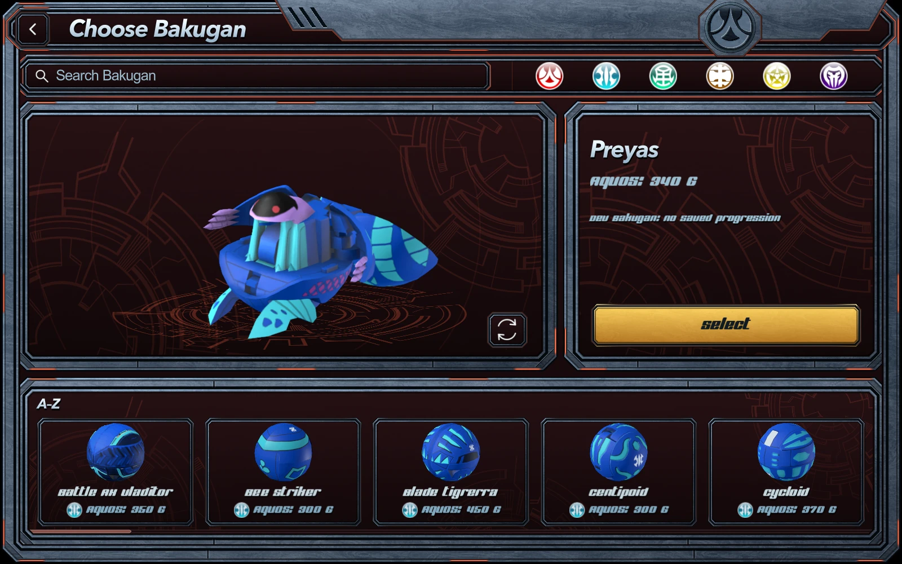
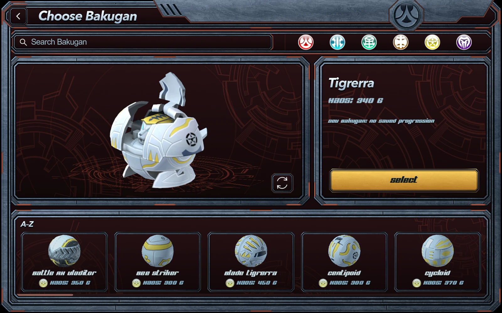
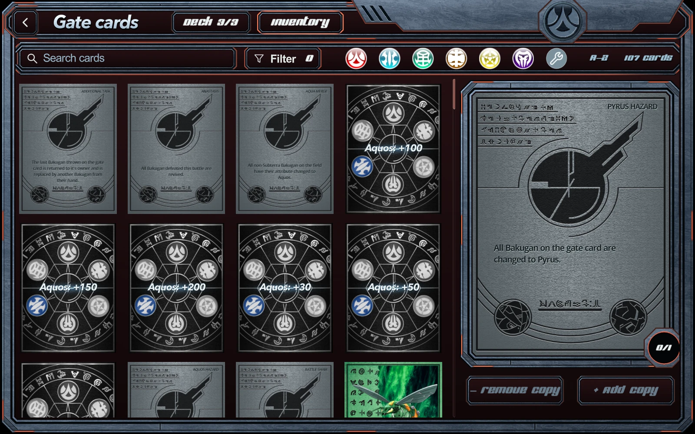
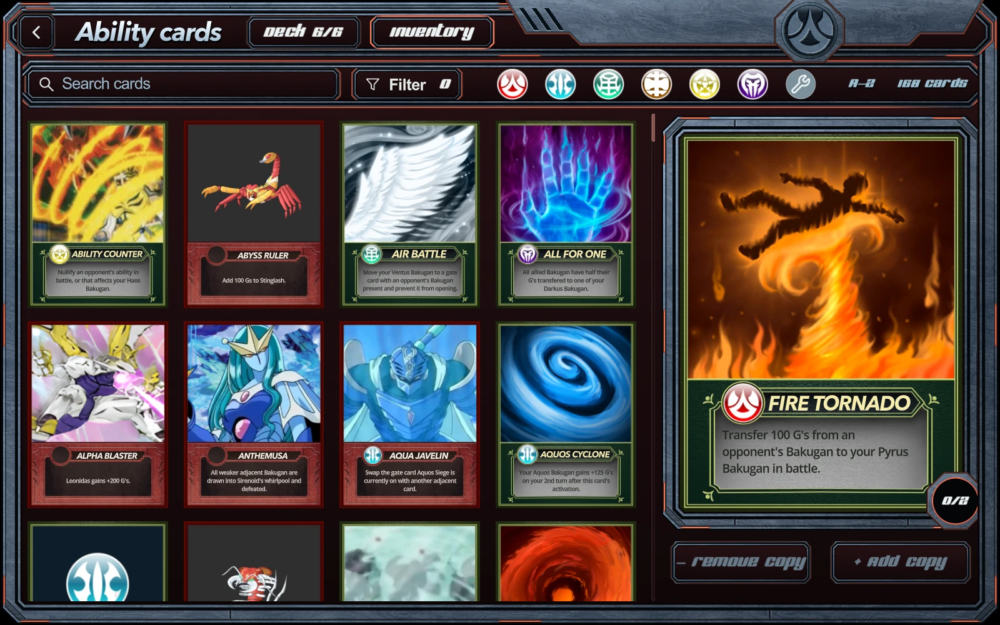
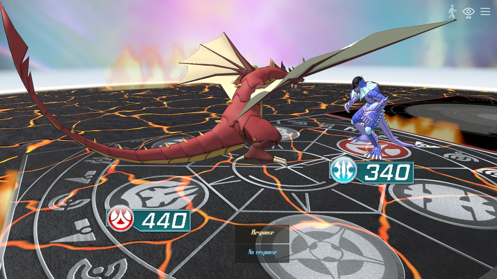
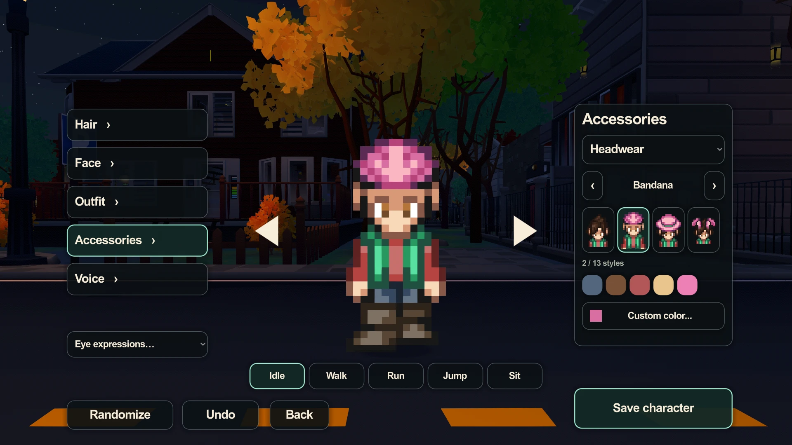

Build a team
Choose three Bakugan, then add gate cards and abilities. Attribute filters and animated previews make it easier to compare creatures and find cards that work together.
Technical case study
Bringing Bakugan battles to desktop and VR.
I built the battle engine, VR interactions, deck builder and character tools in Godot. Players assemble a team of transforming creatures, battle an AI opponent and explore a town on foot or by car.
Personal fan project. I use third-party art and models; my work covers programming, tools and asset integration.
Desktop gameplay
Build a team, place your gate cards and take on a local opponent. Here’s the flow in the current desktop build.
Choose three Bakugan, then add gate cards and abilities. Attribute filters and animated previews make it easier to compare creatures and find cards that work together.
Aim and throw onto a gate card to deploy a Bakugan. Landing beside an opponent can start a fight, so positioning determines who faces whom.
Blow Away carries Preyas off Skyress’s card, separating the two. Players can answer an ability with another card; those responses resolve in reverse order.
Gate bonuses and abilities change each side’s power. Higher power wins a standard fight, with arrival order breaking ties. Defeated Bakugan leave play; the match ends when one team has none left.
VR showcase
VR turns the desktop’s clicks into physical actions. The BakuClip holds your team, cards sit in your hand, and the BakuPod puts battle information on your wrist.
Watch the full VR showcase on YouTubeTake a ball from your BakuClip and throw it onto a gate card. It bounces, opens and becomes a full-size creature at its landing point.
The BakuPod shows the field, both teams and their current power without opening a full-screen menu.
Raise a card overhead to activate it. This ability boosts Dragonoid’s power, reflected in the effect and the BakuPod’s updated total.
Beyond battles
The surrounding town gives the player a character to make their own and a place to explore between matches.
Layer hairstyles, clothes and accessories, change their colors, and preview the result in the world. The editor also lets players check how an outfit looks in motion.
Entering a car hands control from the player to the vehicle. Exiting first brakes the car and checks for a clear place to stand; recovery checks ground support and room for the chassis.
Engineering
The project spans input, rules, tools and rendering. These are a few of the decisions behind the footage.
I kept the rules independent of camera, animation and input code. Mouse clicks, VR gestures and opponent decisions become commands to the same engine. It validates turns and targets before changing the match; recorded commands and a fixed random seed let me reproduce it later.
The deck builder reads the same creature and card definitions used in battle. Cards combine reusable effects such as power changes, movement and counters. That keeps a new card from needing its own path through the UI and rules, while deck validation catches invalid combinations before a match.
Characters are stored as recipes of item IDs and colors. I validate a temporary save before replacing the previous one, retain a backup for recovery and preserve unknown formats. The editor can rebuild the character from its recipe without storing the whole scene.
My tools group static geometry into spatial batches and reduce distant mesh detail. Collision and interactive objects remain active when render meshes unload. Geometry builds on a worker thread so the loading interface can keep responding.
AI-assisted development
I use AI coding agents to investigate bugs, write test scenes and work through fixes. I define the expected behavior and review the result. I give it reproducible scenarios and explicit checks so each proposed fix can be tested.
The agent helps build small Godot scenes that load real project resources, set up a known state and simulate player actions. Assertions check the outcome; logs and screenshots help inspect failures. Isolated save paths keep the tests away from player data.
I have the agent run the reproduction, inspect the failure, edit the relevant code and rerun focused checks. A Python runner catches script errors, failed assertions and timeouts, including failures that don’t produce a useful exit code. I review the diff and check behavior in the game.
Scripted routes record frame times, CPU/GPU timings and draw calls. I use AI to compare runs and investigate spikes, including the slowest 5% of frames. Controlled rendering tests alternate one feature at a time, with hardware, resolution and warm-up conditions recorded.
Terrain collision regression
A terrain check found 4,445 unsupported positions out of 8,550. The fix derives collision bounds from the authored terrain instead of a misplaced fixed origin. The regression test checks those positions and drops the actual player onto a formerly unsupported area to confirm a safe landing.
Profiling example · October 9, 2026
On an Apple M5 at 3420 × 2148, the street scene’s baseline GPU time was 28.2 ms. Four alternating rounds isolated the cost of each setting.
| Diagnostic change | Time saved |
|---|---|
| Disable shadows | 11.3 ms |
| Disable contact shading | 9.0 ms |
| View distance: 500 m → 120 m | 0.3 ms |
VSync off; 60-second cool-down. Each row is a separate diagnostic comparison, with settings restored afterward.
More footage
Select an image for a closer look.






Project scope
Battle rules and AI, desktop and VR controls, deck building, character customization and persistence.
Content importers, scene builders, capture tools and focused regression checks for gameplay and rendering.
Desktop practice battles and VR interactions are playable. I’m continuing headset testing and performance work; online multiplayer is planned.
Runtime architecture
Continue exploring
See my work on native desktop windows and persistent settings in PokePet.